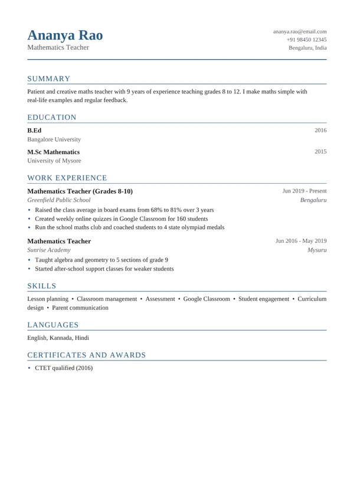

Teacher resume example

Schools want to know what you teach, which grades, and how your students improved. This teacher resume example shows subjects and grades clearly and backs them up with results like higher exam averages.
Use this example — freeOpens in our resume builder with everything filled in. Change it to your own details, pick any of 25 designs and download a PDF.
Free No watermark No sign-up PDF download
Why this teacher resume works
- Subject and grade levels are in the job titles.
- Student results are measured: board exam average up from 68% to 81%.
- Shows extra contributions such as clubs and olympiad coaching.
- Teaching qualifications (B.Ed, CTET) are easy to find.
Teacher resume summary examples
Your summary is the first thing people read. Keep it to 2–3 lines: who you are, your experience, and what you are best at.
Patient and creative maths teacher with 9 years of experience teaching grades 8 to 12. I make maths simple with real-life examples and regular feedback.
Enthusiastic primary school teacher with 5 years of experience making learning fun for children aged 6–10 through stories, games and hands-on activities.
Experienced English teacher for grades 9–12, focused on reading, writing and exam preparation, with a record of strong board exam results.
Skills to put on a teacher resume
Add the ones you really have — and use the same words as the job advert.
- Lesson planning
- Classroom management
- Differentiated instruction
- Assessment & feedback
- Google Classroom / LMS
- Parent communication
- Curriculum design
- Special educational needs (SEN)
- Student engagement
- Exam preparation
Teacher resume bullet points
Start with an action word and add a number to show the result. Copy these ideas and change them to match your own work:
- Raised the class average in board exams from 68% to 81% over 3 years
- Created weekly online quizzes in Google Classroom for 160 students
- Run the school maths club and coached students to 4 state olympiad medals
- Taught algebra and geometry to 5 sections of grade 9
- Raised the pass rate in my class from 72% to 94% in two years
- Created a reading programme that improved reading levels for 80% of students
- Introduced smart-class lessons using videos and quizzes
- Organised the annual science fair with 300 participants
- Mentored 3 new teachers in their first year
Tips for your teacher resume
- Write the subject and grades in your job title, e.g. “Science Teacher (Grades 6–8)”.
- Show results: exam scores, reading levels, competition wins.
- Add your teaching licence or qualifications (B.Ed, PGCE, CTET, state licence).
Applying for a specific job? In the builder, paste the job advert into the Job match checker. It shows which skills from the advert are missing from your resume.